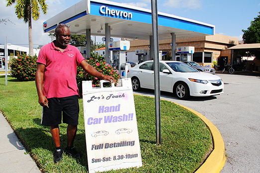
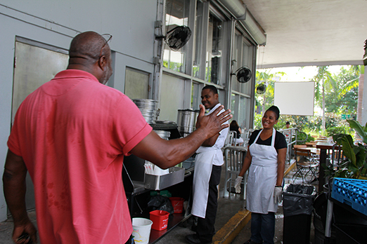
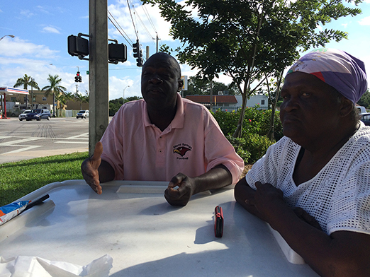
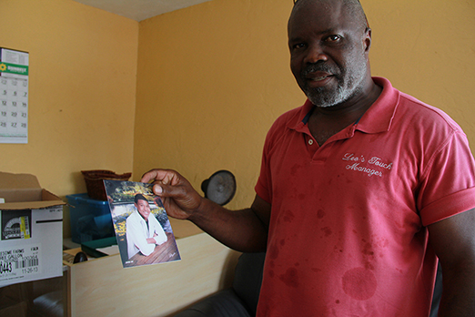
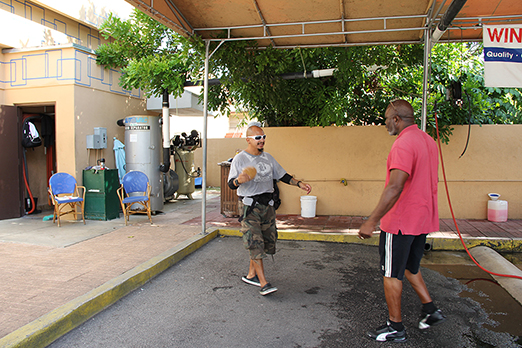

Leonard Leonard owns a carwash in a newly-built Chevron gas station in Little Haiti. The carwash is named Leo’s Touch. He has five people working for him. For another business, he owns a car storage.
9 a.m. every day, Leonard shows up at his car wash driving his black TOYOTA. He comes into the deli to buy a hot coffee and has a little chat with his co- workers. Fresh by the coffee, he jumps in work immediately. He passes through the gas station towards to a white Venza, greeting to the customer with a warm welcomed arms. He asks every detail of customer’s requests. He starts to clean out the garbage inside the car. Water pipe, brush and bucket begin their busy day. As well as Leonard.
“I am a man with dreams,” Leonard says, “But when I was in Haiti, there was no dream.”
Thirty- five years ago, alone, without any family member, Leonard crossed the Caribbean Sea on a small boat with other thirty people. They firstly arrived in Bahamas, then Leonard and his fellows continued heading to the United States. Almost drown by the wild ocean when they left Bahamas, Leonard says, they were cut off from food and water for almost four whole days.
“Scared. I don’t know where we would end up with.” Leonard says.
Finally, he and other thirty people made it to the United States, a country they assumed where they would live a better life. However, Leonard and other people were caught by the coastguard at Palm Beach and sent to Little Haiti. At that time, he was twenty- four years old.
When back home in Haiti, Leonard says that he worked in a plantation growing potato, banana and yam like what almost everybody else do.
“There is not to much success because there is no money and the labor is so hard. ” Leonard says, “One day I saw the cloud, I saw the moon and ocean. It’s the same everyday. Then I decided to come to United States.”
Leonard is not alone in Little Haiti, a neighborhood where Haitians who first came to this country usually end up. But Leonard is different because he chose not to stay in Little Haiti where once he lived for ten years with cheap housing and low earning work. He even succeeded taking his brother and parents to United States.
“I had five jobs. For the last one, I was a manager.” Leonard says, “That was when I gradually learned how to do business.” Three years ago, in 2010, Leonard moved his old carwash that was his first business since 1986 from 5600 Biscayne Blvd to this new gas station on 6705 Biscayne Blvd. Leonard occasionally drives by his old carwash next to a restaurant to visit his friends.
Haitian people come to different parts of United States, including New York, Boston, New Jersey and Miami. There is a significant Haitian population in Little Haiti in Miami-Dade County.
Reasons to explain the immigration vary a lot. Some of them have to escape from their hometown due to the earthquake. Some of them travel with family when they are at their young age. However, some of them choose to leave everything, even their parents and children behind at home, no matter how difficult it is, struggle to United States.
Edoard Estinvil, 43, architecture worker, who came to United States with his father when he was thirteen years old says, “ Sometimes we are still labeled as ‘boat people’. We actually work very hard but it seems that the government doesn’t treat us like other immigrants.”
Although bothered by the “illegal immigrant” identity, in the eyes of the neighborhood people, Little Haiti is a lively community. Colorful street painting covers on the walls. Children are running all over the place.
Muralist Serge Toussaint, 50 years old, painting all the murals along the streets in Little Haiti, says, “Haitian people are always nice to say ‘Hello!’ ‘How are you doing?’ ‘Bonjour!’ It’s a cool little place.”
Despite of the vigor of Little Haiti community, Haitian people keep moving to other neighborhoods. Leonard is one of them though he spent most of the day in Little Haiti, taking care of his business.
“Although I love Little Haiti, otherwise I won’t do my business here, because it reminds me of old happy time hanging out with friends.” Leonard says, “I have to move for sake of my children’s getting better education.”
Leonard has a big family. His wife who once worked in a law firm owns a beauty salon now. They have couple twin sons, five daughters and other two sons. Leonard, now fifty-nine years old, says his youngest grandson, Ezra, 19 years old, who attends UCLA majoring in Business is very dynamic and close to him.
“I sent all my kids to college.” Leonard says.
It seems that for people in Little Haiti, helping their children to get high quality education becomes one of their main concerns.
“I teach kids how to paint instead of letting them following those bad people on the street.” Toussaint says, who is also an art teacher of Little Haiti Cultural Center.
Leonard says he works hard not only because he wants to fulfill his dream, but also managed to send his children to better schools. And he did. All his eleven children finished their college.
“I always shared my story with my children and tell them, ‘You can be anybody, if you really want’, as my father used to tell me to discipline myself.” Leonard says.
Every night after work, he talked to God, Leonard says. He always believes that whenever you ask God, he will show you the answer. Even after he came to United States, he never stops praying. Every Sunday morning, Leonard goes to church to teach his fellow how to love others.
Leonard says he also believes that certain people are gifted with wisdom by God. What was never forgotten is when he landed on United States. He lived on the street for three months with one dollar in the pocket and language barrier. He says during that time, he learned that if you want to survive, you must have determined mind and always smile to others.
Everyday, Leonard sits in front of his carwash busy in saying hello to every customer. He says that it’s not about business, but it’s about being nice to people. Reginald Marcelin, 42, one of the workers in Leonard’s carwash, who came to United States 20 years ago says, “Leonard is a good person in work or as a person. He is too nice to be a boss.
Carlos Salazar, 35, passed by Leonard’s carwash and stopped to greet him. Salazar is a nightclub promoter from New York who met Leonard ten years ago in a bar. He says, “I can never believe that a man can be so successful struggling from this neighborhood. He is so different! The more you talked to him, the more surprise you will be.” Salazar says that Leonard always comes to talk to you. This is the way they made an acquaintance as well as how Leonard met his wife.
Leonard is different not only because he always keeps the faith in his heart, but also he spreads his love. In 1995, he built a line of palm all the way along the Biscayne Boulevard. And even Miami Herald covered his movement. He showed me the old newspaper with proud.
“The very heartbreaking thing is not the attitude from other people or that the government won’t help us, but the Haitian people with privilege don’t help.” Estinvil says.
Leonard is a helper. He helped his parents and brother come to United States legally. He helped all his children get good education. He helps his fellows to get opportunity to work. He also helps people in church to learn love.
“The good thing about Haitian people is that we stick together. When you come to Little Haiti, you feel home.” Toussaint says.